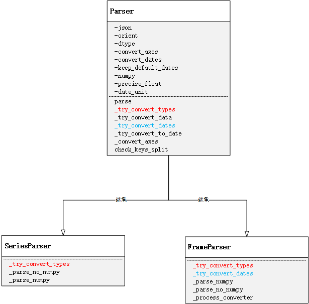

Pandas.read_json()踩坑总结 & 源码初探
基于实际工作中遇到的一种极端场景来分析Pandas.read_json()方法的源码实现；顺便站在个人学习和使用的角度出发，吐槽一下该方法底层设计的不合理之处。
准备工作
环境依赖：Python 2.7
样例数据(json文件)
问题描述
通过Pandas.read_json(jsonFilePath)方法读取json文件时，会出现数据内容发生奇怪的转变；Eg：假设样例数据的文件名为data.json，则执行pd.read_json(data.json)后的结果以及各列数据的数据类型分别如下图所示：
相较于原始数据集，经过该方法执行后的结果有两处不一致的地方：第一，userId和telephone这两列的数据类型由原本的String变成了int64；第二，userId字段的值发生了变化。
源码剖析
接下来将从深入源码来探究这种情况发生的原因；pd.read_json()的源码及其该方法之间的调用时序分别如下所示：
1 | def read_json(path_or_buf=None, orient=None, typ='frame', dtype=True, |

通过这段源码可以看出，read_json方法主要做了三件事：首先基于给定的参数做校验，然后获取指定url或流中的数据信息转化为jsonStr，最后一步对该jsonStr进行解析。用户可显示的通过typ字段来指定解析结果的类型(DataFrame or Series)。解析逻辑所对应的对象模型如下所示：

由于Series的解析逻辑比较简单，且实际工作中直接基于DataFrame的操作比较多，因此这里主要对jsonStr解析成DataFrame的过程做进一步的梳理。在第三步数据解析的过程中，FrameParser.parse()方法的本质其实是调用了父类Parse的parse方法，该方法的职能有三个：首先将jsonStr解析成DataFrame数据结构；其次对解析结果的轴做数据类型转化；最后尝试对数据进行类型转化。源码及对应的方法间调用时序如下图所示：
1 | def parse(self): |

在解析jsonStr时，首先会根据参数numpy来判断是否需要将数据反序列化为numpy数组类型；这个反序列化的过程是通过Pandas内部封装的json工具类的loads方法来实现的；然后将反序列化后的Dict对象经过DataFrame类进行数据初始化，从而得到该jsonFile所对应的DataFrame数据结构。由于_parse_no_numpy() 和_parse_numpy()这两个方法的原理类似，这里以FrameParse._parse_numpy()为例，看一下对应的源码：
1 | def _parse_numpy(self): |
注意这里的写法：父类Parse中是没有_parse_no_numpy() 和_parse_numpy()这两个方法的，也就是说是在父类调用子类的方法。其实不同于Java这类编程语言，在Python中需要从对象生成的角度来看待这个问题；因为此时的Parse类就是FrameParser，所以self._parse_no_numpy()的调用本质就是其实现类自身的方法，所以就有了这种看似奇怪的父调子写法。
当执行完数据解析后，我们已经得到DataFrame，那么先别着急往下看，在Debug下看看此时解析出来的结果如何：


对比发现，走到这一步时解析结果和字段类型都和我们原始的数据集保持一致，所以可以肯定数据的解析逻辑是没有问题的，那么跟着源码继续往下走，就来到frame轴类型转化的过程；截止目前个人还是不太明白这层处理的意义是什么；因为在对index和column进行数据类型转化时，index列的类型是int64，而column的名字也都是字符串从而导致尝试类型转化无效。所以对于这处有了解的环境补充和指教。因为这次的逻辑判断可通过显示的控制，且经过测试后发现执行对结果并无影响，因此在这里不做过多的讨论。
最后来看看parse的最后一个职能：尝试对数据进行类型转化。该方法在父类的实现只是简单的异常捕获，具体的处理逻辑在对应的子类中实现，在这里看一下FrameParser类中方法_try_convert_types()的源码实现和对应的方法间调用时序：


在FrameParse中，会对数据进行两次转化尝试：首先会尝试进行日期类型的转化，其次会对数据进行数值类型转化。在日期类型的尝试转化中，是基于特殊命名的列数据进行处理，具体包括列名以“_at”，“_time”结尾、或者以“timestamp”开头或者列名等于“modified”，“date”， “datetime”。因为这种处理对最终结果不会产生影响，所以在这里不做过多讨论。
跳过日期类型转化后，就来到最后一步，数据的数值类型转化尝试。方法_process_converter()可以抽象的理解为一个数据转化工具类，负责对数据集中的每一列数据按照指定的转化规则进行转化尝试；该方法的第一个参数类型是一个方法，作用就是指定需要对数据列做哪种转化。在这里传入父类的Parse._try_convert_data()方法，该方法的作用就是尝试将数据转化成数值类型；该方法的源码如下所示：
1 | def _try_convert_data(self, name, data, use_dtypes=True, |
回顾一下文章一开始提到的例子，具体的调用方法为pd.read_json(filePath)，则通过查看源码的参数注解可知dtype默认为True，此时在方法_try_convert_data里，由于user_dtypes和dtype同为True，convert_dates为False，所以代码直接跳过前面的逻辑判断和时间类型转化尝试，直接进入数值类型的转化尝试中，读完源码就可以看到数据会先尝试转化成float64类型，然后尝试转化为int64类型。通过一步步的Debug，也终于找到问题发生的根源：当代码经过如下位置时，查看一下此时对应的数据结果，如下图所示：

看到这也就真想大白了：基于pd.read_json(path)这种写法，底层会对每列数据进行数值类型转化尝试；又因为原始数据集中的userId是数值类型的字符串，所以在将Object转为float64时不会报错，从而再经过后面的int类型的转化，从而导致我们的最终看到的数据类型发生变化。我们可以看到telephone的类型发生了变化，但是数据类型缺没有发生改变，而userId的内容都发生的奇怪的变化，这个原因又是什么呢？
其实这个问题的本质和Python和Pandas就没太大关系了，要弄清这个原因，就需要从计算机存储浮点数的机制说起。因为Python的float类型是存在IEEE 745标准，因此这里的float64即就是双精度浮点数，所以在内存中，每个双精度浮点数所占用的总位数为64位，符号位占1位，阶数占11位，尾数占52位，那么：252=4503599627370496，即双精度浮点数的有效位数为16位。由于userId是一个19位的字符串，所以在做类型转化的时候会因为浮点数上溢现象导致数据失真；这就是为什么经过astype('float64')后数据内容发生变化的原因。
既然在实际应用中，无法保证、要求或者约束原始数据集，那么如果规避这种因为浮点数上溢带来的数据失真的情况呢？我们再来看一下那个数据类型转化的方法_try_converty_data()的源码：

通过阅读上下文的代码可知，user_dtyps恒为True，但是dtype可以让用户显示的指定，只是如果不指定默认为True，从而导致浮点数存储上溢的情况；当再次看到这里的判断逻辑不难发现，如果把dtype设置为False，则可以完全避免数据类型尝试转化的过程，从而可以保证数据的真实性和有效性；与此同时，通过查阅pd.read_josn()的参数注解可知道，dtype可以为Boolean型，同样也可以为Dict类型，结合源码可以发现可以自定义指定需要转化的数据列和数据类型；这样我们也可以通过显示的指定userId的转化类型来规避这种上溢带来的问题。上述两种方法都是有效的，在这里我以第二种为例，重修修改一下代码：

总结
在基于pandas处理数据时，尤其是通过读取外部数据源来做分析时，一定要注意数据类型的转化问题，避免出现类似这种因为底层数据存储溢出导致数据失真、或者数据类型变化导致的错误【Eg：pd.read_json()，pd.read_csv()】。
最后在顺便吐槽一下，pandas底层的这个设定也太过于奇葩；应该将read_json()方法中的参数dtype的默认值设置为False，让用户去显示的做类型转化；而不应该为了凸显在数据处理上的便利性，去容忍这种这种数据溢出的潜在Bug(亦或是pandas的开发者压根没意识到这个问题 ~~~ 哈哈 ^v^)。